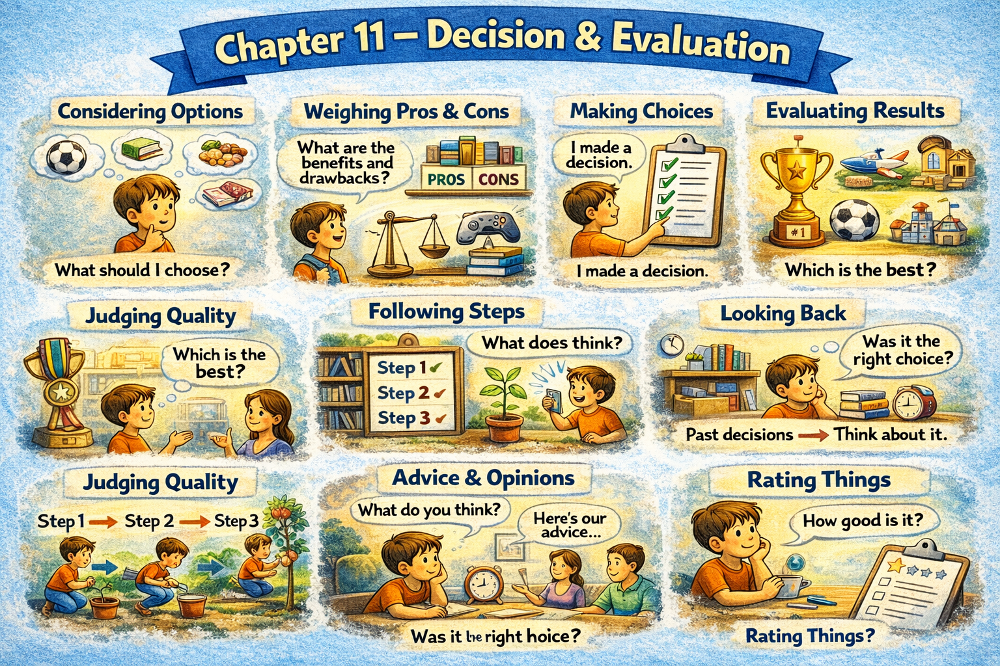

Chapter 11 — Decision & Evaluation

Micro Scene 1 — Making a Decision
1️⃣ Scene Text
When faced with multiple options, I first identify the criteria for evaluation.
I rarely decide impulsively without considering consequences.
If the impact is significant, I slow down the decision process.
Sometimes the correct choice becomes clear after reflection.
Other times, no option feels ideal.
In those cases, I select the alternative with the lowest risk.
Decisions require both information and judgment.
If uncertainty remains high, I delay commitment.
Once a decision is made, hesitation must stop.
Commitment transforms possibility into direction.
A decision defines the next action.
2️⃣ Core Verb Pool
face
identify
decide
consider
slow down
reflect
select
require
delay
remain
commit
transform
define
3️⃣ Structure Patterns
When X + verb, Y + verb
If X + verb, Y + verb
Sometimes…, other times…
In those cases,…
Once X + verb, Y + verb
X transforms A into B
4️⃣ Replace & Extend
Replace the risk:
I select the option with the lowest risk.
→ I select the option with the highest return.
→ I select the most sustainable option.
Replace hesitation:
If uncertainty remains high…
→ If information is incomplete…
→ If trade-offs are unclear…
Replace commitment:
Commitment transforms possibility into direction.
→ Choice transforms ambiguity into action.
→ Decision transforms thought into movement.
5️⃣ Spoken Mode
When I have options, I think about the criteria first.
If it’s important, I slow down.
Sometimes the answer becomes clear after thinking.
If I’m unsure, I wait.
Once I decide, I commit.
🔎 Structural Notes
• “face with” introduces decision context.
• “In those cases” bridges logic.
• “Once…” closes deliberation.
Micro Scene 2 — Comparing Alternatives
1️⃣ Scene Text
When comparing alternatives, I examine both strengths and weaknesses.
One option may offer speed, while another provides stability.
Although one appears more attractive initially, it may involve hidden costs.
I evaluate trade-offs before reaching a conclusion.
If two options perform similarly, I consider long-term implications.
Some differences are superficial, while others are structural.
A small advantage in one dimension may not outweigh a larger disadvantage in another.
Comparison requires consistent criteria.
Without a shared standard, evaluation becomes subjective.
The better choice depends on context rather than preference alone.
Comparison clarifies relative value.
2️⃣ Core Verb Pool
compare
examine
offer
provide
appear
involve
evaluate
consider
outweigh
require
depend
clarify
3️⃣ Structure Patterns
When X + verb, Y + verb
Although X + verb, Y + verb
If X + verb, Y + verb
X may + verb
X requires + noun
X depends on + noun
A outweighs B
4️⃣ Replace & Extend
Replace the comparison:
One option offers speed.
→ One approach offers flexibility.
→ One solution offers scalability.
Replace the hidden cost:
It may involve hidden costs.
→ It may create long-term risk.
→ It may reduce stability.
Replace the context:
The better choice depends on context.
→ The correct decision depends on timing.
→ The optimal strategy depends on constraints.
5️⃣ Spoken Mode
When I compare options, I look at pros and cons.
One might be faster; another might be more stable.
Even if something looks better at first, it might have hidden costs.
The best choice depends on the situation.
Comparison helps me see relative value.
🔎 Structural Notes
• “outweigh” expresses weighted comparison.
• “Although…” introduces evaluative contrast.
• “depends on context” avoids absolute claims.
Micro Scene 3 — Evaluating Quality
1️⃣ Scene Text
Quality is assessed according to clear standards.
Before judging performance, I define the evaluation criteria.
If the criteria are inconsistent, the judgment becomes unreliable.
A result may appear impressive but fail to meet essential requirements.
Surface success does not always indicate structural strength.
I separate measurable outcomes from subjective impressions.
When evidence supports the claim, confidence increases.
If evidence is weak, conclusions must remain tentative.
Evaluation requires transparency in reasoning.
The stronger the foundation, the more reliable the assessment.
Quality emerges from alignment between intention and execution.
2️⃣ Core Verb Pool
assess
judge
define
become
appear
fail
indicate
separate
support
increase
remain
require
emerge
3️⃣ Structure Patterns
X is assessed according to + noun
Before + verb-ing
If X + verb, Y + verb
X does not always + verb
When X + verb, Y + verb
The + comparative…, the + comparative…
X emerges from + noun
4️⃣ Replace & Extend
Replace the standard:
Quality is assessed according to clear standards.
→ Performance is evaluated based on measurable outcomes.
→ Results are judged against predefined criteria.
Replace the illusion:
Surface success does not indicate strength.
→ Initial improvement does not guarantee stability.
→ Immediate growth does not imply sustainability.
Replace the evidence:
If evidence is weak…
→ If data is incomplete…
→ If assumptions are unverified…
5️⃣ Spoken Mode
I don’t judge without clear criteria.
If the standards aren’t consistent, the evaluation isn’t reliable.
Something can look impressive but still fail structurally.
Stronger evidence means stronger conclusions.
Quality comes from alignment.
🔎 Structural Notes
• “according to” anchors evaluation to standard.
• “The stronger…, the more…” expresses proportional reliability.
• “emerge from alignment” signals systemic quality.
Micro Scene 4 — Expressing Preference
1️⃣ Scene Text
When expressing a preference, I distinguish between personal taste and objective evaluation.
I may prefer simplicity, even if complexity offers more features.
Preference does not always align with optimal performance.
If I value stability over speed, I choose the more reliable option.
Sometimes preference is shaped by experience rather than logic.
I explain the reason behind my choice to make it transparent.
A preference without justification appears arbitrary.
If context changes, my preference may also shift.
Stating preference clearly prevents misunderstanding.
Personal bias influences evaluation unless it is acknowledged.
Preference reflects values, not absolute truth.
2️⃣ Core Verb Pool
express
distinguish
prefer
align
value
choose
shape
explain
appear
shift
prevent
influence
reflect
3️⃣ Structure Patterns
When X + verb, Y + verb
I may + verb
If X + verb, Y + verb
X is shaped by + noun
X appears + adjective
If X + verb, Y may + verb
X reflects + noun
4️⃣ Replace & Extend
Replace the value:
I value stability over speed.
→ I value depth over breadth.
→ I value clarity over complexity.
Replace the shift:
If context changes, preference shifts.
→ If priorities change, choices change.
→ If constraints shift, evaluation shifts.
Replace the distinction:
Preference does not equal correctness.
→ Bias does not equal truth.
→ Taste does not equal quality.
5️⃣ Spoken Mode
I might prefer simplicity, even if something else has more features.
If I value stability more, I’ll choose the safer option.
Preferences can change depending on context.
I explain my reasons so it’s clear.
Preference reflects values — not absolute truth.
🔎 Structural Notes
• “prefer X over Y” expresses comparative value.
• “reflect” indicates value expression.
• Distinguishing preference from evaluation prevents confusion.
Micro Scene 5 — Risk Assessment
1️⃣ Scene Text
Before making a significant decision, I assess potential risks.
I identify what could go wrong and estimate the likelihood.
If the downside outweighs the benefit, I reconsider the choice.
Some risks are immediate, while others unfold gradually.
I distinguish between reversible and irreversible consequences.
If an error can be corrected easily, the risk becomes manageable.
High uncertainty increases perceived danger.
However, avoiding all risk eliminates opportunity.
Balanced evaluation requires proportional response.
Risk is not the absence of safety, but the presence of uncertainty.
Understanding risk sharpens judgment.
2️⃣ Core Verb Pool
assess
identify
estimate
outweigh
reconsider
unfold
distinguish
correct
increase
eliminate
require
sharpen
3️⃣ Structure Patterns
Before + verb-ing
If X + verb, Y + verb
Some X…, while others…
X outweighs Y
If X + verb, Y becomes + adjective
X requires + noun
X is not A, but B
4️⃣ Replace & Extend
Replace the evaluation:
If the downside outweighs the benefit…
→ If the cost outweighs the gain…
→ If the risk outweighs the reward…
Replace reversibility:
If the mistake is reversible…
→ If the decision can be adjusted…
→ If the loss is recoverable…
Replace the balance:
Avoiding all risk eliminates opportunity.
→ Eliminating uncertainty eliminates growth.
→ Excessive caution reduces potential.
5️⃣ Spoken Mode
Before I decide, I look at the risks.
If the downside’s too big, I rethink it.
Some risks show up immediately; others take time.
If it’s reversible, it’s less scary.
Avoiding all risk means missing opportunities.
🔎 Structural Notes
• “outweigh” signals comparative evaluation.
• “reversible vs irreversible” clarifies impact scale.
• “not…, but…” reframes definition.
Micro Scene 6 — Reaching a Conclusion
1️⃣ Scene Text
After considering the available evidence, I draw a conclusion.
The decision reflects both analysis and judgment.
If the reasoning is consistent, the conclusion becomes defensible.
Sometimes the evidence supports a clear answer.
Other times, the result remains probabilistic rather than certain.
In such cases, I state the level of confidence explicitly.
A conclusion does not eliminate uncertainty, but it reduces ambiguity.
Once a position is taken, I remain open to revision.
Strong conclusions are supported by transparent reasoning.
Weak conclusions rely on assumption rather than evidence.
A well-formed conclusion closes deliberation without closing inquiry.
2️⃣ Core Verb Pool
consider
draw
reflect
become
support
remain
state
reduce
take
revise
rely
close
3️⃣ Structure Patterns
After + verb-ing
If X + verb, Y + verb
Sometimes…, other times…
In such cases,…
X does not + verb, but + verb
Once X + verb, Y + verb
X relies on + noun
4️⃣ Replace & Extend
Replace certainty:
The result remains probabilistic.
→ The answer remains tentative.
→ The outcome remains uncertain.
Replace transparency:
Strong conclusions are supported by evidence.
→ Valid arguments rely on logic.
→ Credible claims depend on data.
Replace openness:
I remain open to revision.
→ I am willing to adjust.
→ I reconsider if new evidence appears.
5️⃣ Spoken Mode
After reviewing everything, I reach a conclusion.
If the reasoning’s solid, the conclusion holds.
Sometimes the answer’s clear; sometimes it’s just likely.
Even after deciding, I stay open to new evidence.
A good conclusion ends debate — not curiosity.
🔎 Structural Notes
• “draw a conclusion” is formal evaluative phrasing.
• “probabilistic rather than certain” marks epistemic nuance.
• “without closing inquiry” preserves intellectual openness.
🔸 Integration Scene — Structure of Evaluation
Decisions begin with criteria.
Alternatives are compared through consistent standards.
Quality is assessed according to measurable evidence.
Preference reflects values, not absolute truth.
Risk is evaluated proportionally.
Trade-offs are acknowledged rather than ignored.
Strong conclusions rely on transparent reasoning.
Weak judgments rely on assumption.
Certainty is rare; probability is common.
Evaluation transforms information into direction.
Reasoning precedes commitment.
Commitment precedes action.
Action produces consequence.
Consequence invites further evaluation.
Decision and evaluation form a continuous cycle.
Judgment shapes reality.
Integration Verb Focus
compare
assess
evaluate
prefer
weigh
decide
conclude
revise